Introduction to Networked Embedded Systems
What an embedded system is, how embedded systems became connected and intelligent, and which parts you will find on the circuit board of one.
Embedded systems and the connectivity trend
What is an embedded system?
A computer hiding inside something else
Nobody buys a washing machine because they want a computer. They want clean clothes. Yet there is a computer inside, quietly running the show. That is an embedded system: a computer in a device whose main job is not computing.
A laptop is the opposite: a general-purpose computer that does whatever program you start. An embedded system does one job, forever.
- Definition: a computer in a device whose principal mission is not computation.
- A special-purpose computing system: it has a dedicated function within a larger system or product, and it typically measures and controls physical operations.
- As opposed to general-purpose computers: laptops, desktops, servers.
- Embedded systems are everywhere. In 2009 it was estimated that more than 98% of all produced processors were used in embedded systems.
- Examples from the slide: washing machines, microwave ovens, calculators, digital watches, GPS receivers, heart monitors, laser printers, engine controllers, digital cameras, traffic lights, remote controls, cash registers, treadmills, gas pumps, card readers, thermostats, pacemakers.
- The dedicated function is why they can be small, cheap and low-power: the hardware only needs to be good enough for one task.
The washing machine as an embedded system
Four kinds of computer-controlled functions
What does the computer in a washing machine actually do? It listens to you (buttons and display), it runs the process (water, heat, spinning), it keeps things safe (no start with the door open) and it watches the clock (how long each stage takes).
Almost every embedded system you will meet has these same four jobs in some mix.
- Input/Output: the user selects programme, temperature, rinsing speed, duration. Preferences are captured via buttons, switches or touch screens; the status of the washing cycle and errors are shown on a screen or with LEDs.
- Control functions (sensing and actuation): control the valves that let water in and out of the tank, the heater that brings the water to the correct temperature, and the power that goes to the motor to get the right RPM.
- Safety functions (errors and warnings): check that the door is closed before the programme can start, check the weight of the clothes, check that the right amount of water is in before heating it.
- Time keeping: keep the time passed between washing stages; delayed start functionality.
Connecting the digital to the physical world
Senses and muscles for a computer
An embedded system lives close to the real world. Sensors are its senses: eyes, ears, a sense of temperature. Actuators are its muscles: they push, heat, light up or make sound.
Without sensors it would be blind; without actuators it could only watch.
- Embedded systems employ sensors to measure and perceive the physical world, and actuators to alter and manipulate it.
- Sensors: cameras, microphones, thermometers, humidity sensors, pressure sensors, light sensors, radars, lidars, motion sensors.
- Actuators and other output devices: screens, speakers, electric motors, fluid motors, switches, valves, heaters, vibration motors, lights.
- Together they form the loop behind almost every embedded application: sense, decide, act.
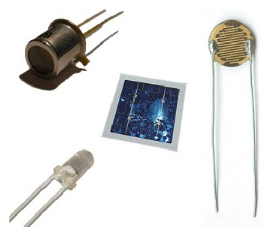
Two big trends in embedded systems
Connectivity and intelligence
Embedded systems used to be loners that did one simple thing. Two things are changing that: they are learning to talk to each other, and they are getting smarter.
The rest of this lecture follows these two threads, first connectivity, then intelligence.
- Connectivity: embedded systems send and receive data to and from other embedded systems or larger systems. They are forming larger and wider, potentially global, collaboration networks.
- Intelligence: embedded systems provide and consume data as part of Artificial Intelligence frameworks that extract knowledge and perform reasoning. They increasingly process data locally, are capable of embedded AI, and make autonomous decisions.
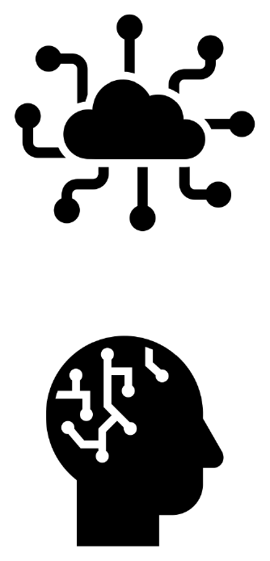
Networked embedded systems
From loners to a team
One musician can play a tune; an orchestra needs everyone to listen to each other. A networked embedded system is that orchestra: several small computers, connected, working towards one common goal.
- Originally, embedded systems operated in isolation as part of a single machine or system. Example: a thermostat inside a boiler measures the temperature and controls the power that goes to the heater to reach the desired temperature.
- Networked embedded systems: a group of embedded systems connected over a network that cooperate towards one goal or application.
- Also known as distributed embedded systems.
- The first networked embedded systems were connected over wired networks.
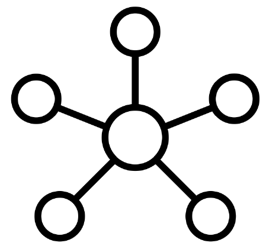
CAN bus
The wired network inside a car
A modern car contains dozens of small computers: engine, brakes, windows, lights, seats. Wiring each one to every other would mean kilometres of cable. Instead they all hang on a shared line and take turns talking, like people in a group call.
That shared line is the CAN bus.
- A wired networking solution designed for vehicles (CAN stands for Controller Area Network).
- Timeline: originally developed by Bosch starting in 1983; officially released in 1986; Mercedes-Benz first introduced it in production vehicles in 1991; standardised by ISO in 1993.
- The figure shows a typical layout: a high speed CAN for the drivetrain (engine, transmission, suspension), a low speed CAN for body electronics (windows, locks, seats, lights), and gateways that pass messages between the networks.
- It is the lecture's example of the first step of the connectivity trend: networks of embedded systems within the same machine.
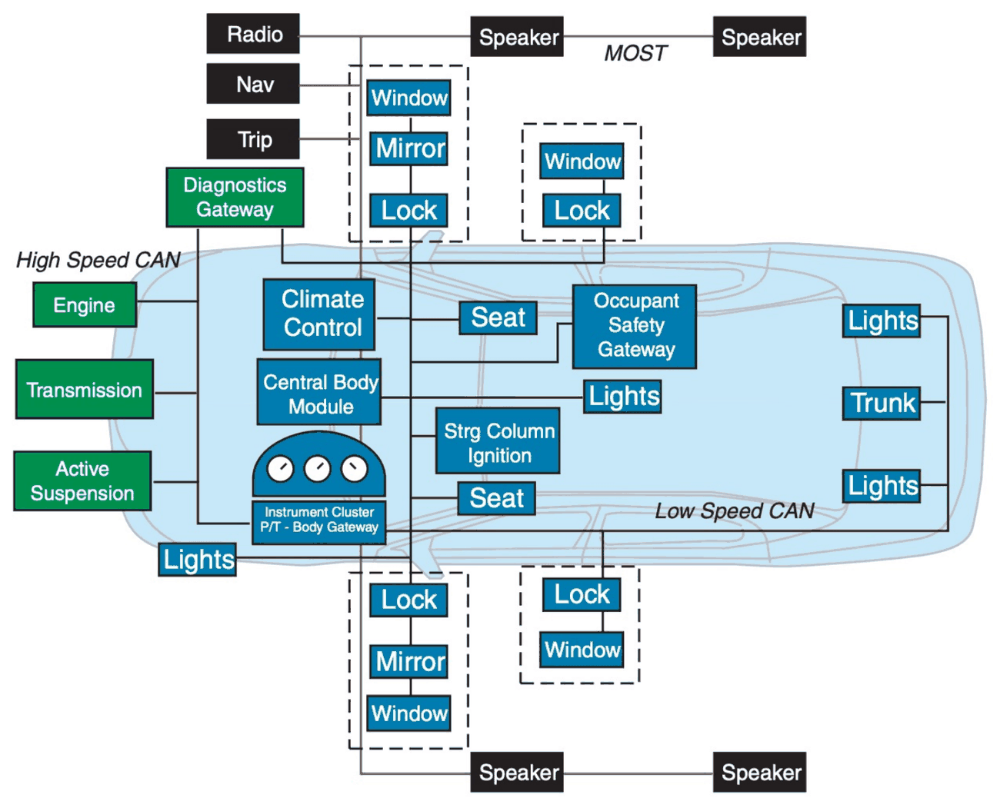
From wired to wireless embedded systems
Cutting the cable
Cables are fine inside a car. But try running cables to a hundred sensors spread over a farm, or to a fitness tracker on your wrist. Wireless lets you put devices anywhere, move them around, and reach further by letting devices pass messages along like a bucket brigade.
- Flexible, no infrastructure required: an apartment can have wires embedded in the walls when it is built or renovated, but wireless makes things easier when that infrastructure does not exist.
- Easy to extend coverage: from star networks (everyone talks to one central node) to multi-hop networks (nodes relay for each other, as in the mesh figure).
- Mobility: wearable and portable embedded systems.
- Wireless embedded systems form Wireless Sensor Networks and Wireless Sensor and Actuator Networks.
- The agriculture figure shows the typical structure: sensor nodes in the field forward data to a gateway node, which connects to the internet, a database server and remote users.
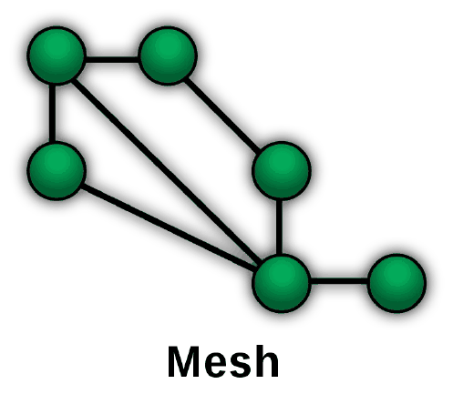
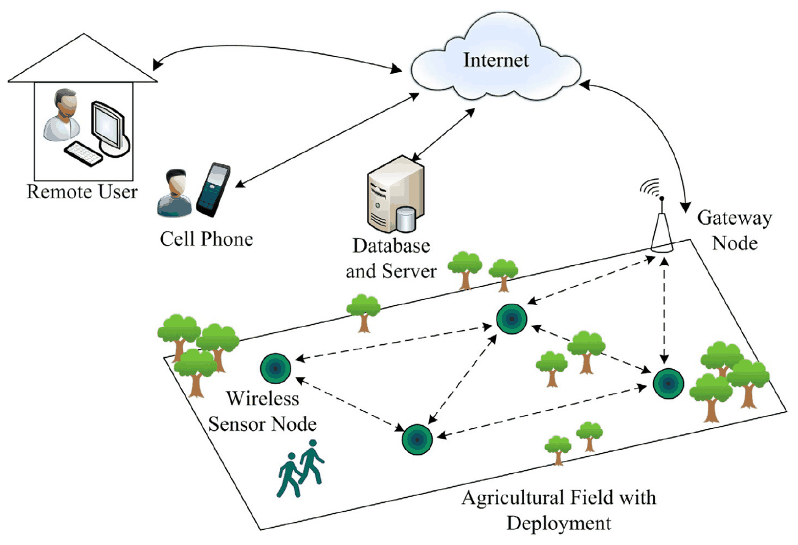
The Internet of Things and the connectivity trend
From islands to one global network
So far each network was an island: one car, one field, one building. The Internet of Things builds bridges between the islands, so a sensor in a field can reach a server, or your phone, on the other side of the world.
- The Internet of Things connects isolated networks of embedded systems into a "global" network.
- Application domains: smart cities, transportation networks and logistics; environmental and wildlife monitoring; disaster response (earthquakes, wildfires); industrial networks, manufacturing and factories; agriculture and maritime; energy management and the smart grid; health systems, personal health and fitness; consumer electronics and entertainment; building automation and smart homes; military.
- The connectivity trend, an increasing drive for connectivity and collaboration:
- Isolated embedded systems
- Networks of embedded systems within the same machine
- Networked embedded systems forming wired networks
- Wireless embedded systems covering wider areas
- The potentially global and beyond (for example satellites) connectivity of the Internet of Things
The intelligence trend
Intelligent embedded systems
AI, cognitive and autonomous systems
A pile of sensor readings is just numbers. Intelligence is what turns "the floor vibrated 40 times in a minute" into "someone is walking here", and then into "switch on the light".
The more of that a system can do without a human helping, the more autonomous it is.
- Artificial Intelligence: the process of finding patterns and extracting knowledge out of raw data, and using the data and knowledge to perform reasoning, decision making, planning and so on.
- Cognitive systems: systems that imitate the human brain. Wikipedia describes cognition as encompassing "all aspects of intellectual functions and processes such as: perception, attention, thought, intelligence, the formation of knowledge, memory and working memory, judgment and evaluation, reasoning and computation, problem solving and decision making, comprehension and production of language."
- Autonomous systems: systems that operate with little or no human intervention.
Control systems
The classic embedded application
Taking a shower, you feel the water (sense), decide it is too cold, and turn the tap (act). Then you feel again. A control system is that loop, done by a machine, many times per second: measure, compare with what you want, adjust.
- A control system regulates a variable using sensing, actuation and a control algorithm.
- It is the classic embedded system application, and the simplest form of machine intelligence: it involves perception (sensing) and decision making (actuation).
- Reading the figure (a flow controller):
- Set point (SP): the desired value.
- Process value (PV): the measured flow rate, reported by the flow transmitter (the sensor).
- Controller output (CO): the valve position sent to the flow control valve (the actuator, or final control element).
- Because the output affects the next measurement, this is a closed loop (feedback). The thermostat in the boiler from topic 05 is the same structure.
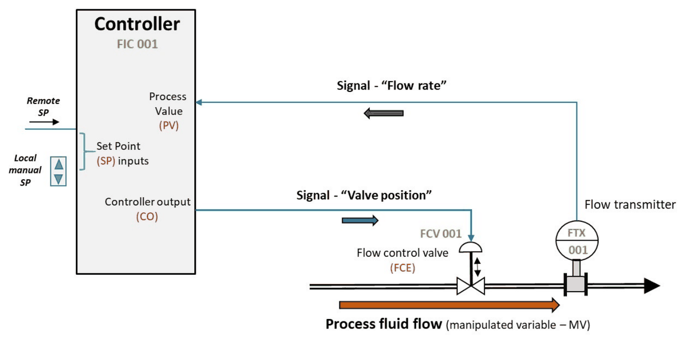
Rule-based machine intelligence
Deduction: if this, then that
The simplest way to make a machine "smart" is to give it a rulebook: if this happens, then do that. The machine never guesses. It checks the conditions and, if they all hold, does what the rule says.
A human wrote the rules, so the machine is exactly as clever as its rulebook.
- Deductive reasoning: derive conclusions from rules and axioms. Example: "All humans are mortal", "Alice is human", therefore "Alice is mortal".
- It can be formulated as "if-then" statements: "if X is human, then X is mortal".
- This is how intelligence and automation are built in many networked embedded systems. Building automation example:
IF motion sensor inside room detects movement
AND time is between 9 am and 5 pm
AND room temperature is lower than 19 degrees
THEN turn on room heating - Note that the rule combines several sensors (motion, clock, temperature) and an actuator (heating), possibly in different devices: a networked embedded system.
- Strength: predictable and easy to explain. Weakness: someone has to think of every rule in advance.
Data-driven machine intelligence
Induction: learning from examples
The other way round: instead of being handed the rules, look at lots of examples and work out the pattern yourself. You have only ever seen white swans, so you expect the next swan to be white.
That usually works, and it is how you learn most things. But one black swan proves you wrong.
- Inductive reasoning: derive models from observations. Example: "All swans we have seen are white", therefore "All swans are white", therefore "I predict that an unknown swan we have not seen is also white".
- In relatively simple problems we can hand-craft models out of observations that have high predictive power. Example: using Newton's laws to predict the exact location of a planet in the future.
- In more complex problems we instruct machines to find a model that explains the input data, and use it to predict future data. That is machine learning.
- Compare with topic 11: deduction goes from rules to conclusions and is certain; induction goes from observations to a model and is only as good as the data.
Deep (artificial) neural networks
Powerful, hungry models
A deep neural network is a huge pattern-finder. Show it millions of examples and it discovers patterns far too complicated for a person to write down as rules.
The catch: it is hungry. It needs enormous amounts of data and computing power. Guess who produces the data: networks of sensors.
- Very good at constructing complex models with high predictive power based on observations.
- Require a lot of computing power.
- Require a lot of observations (input data).
- Enabled by advances in cloud computing and big data.
- In this context, networked embedded systems play the role of (big) data generators.
- The figure shows the structure: layers of simple units, each connected to the units of the next layer. "Deep" refers to having many such layers.
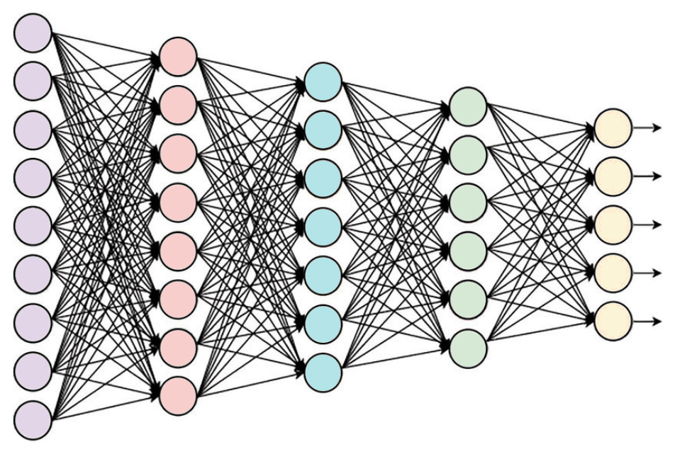
Cloud-based IoT systems
Send everything to the data centre?
The obvious design: the small devices just collect data and send it all to a giant computer far away, the cloud, which does the thinking.
It is like phoning an expert for every decision. The expert is brilliant, but the call costs money, takes time, fails when there is no signal, and you have to tell them everything.
- Advantages: lots of computing power; lots of storage; possible to train really accurate but very resource-consuming deep learning models.
- Disadvantages:
- Cost: it is expensive to transfer, store and process lots of data.
- Latency: may be prohibitive for delay-sensitive use cases.
- Dependency on infrastructure: no-coverage zones.
- Privacy: potentially sensitive data goes to third parties.
- For a battery-powered device there is a further cost hidden in the first point: every transmitted byte costs radio energy.
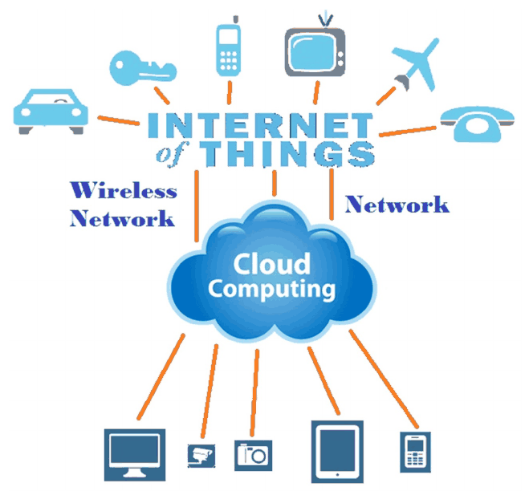
The cloud-fog-edge continuum
Put the thinking where it fits best
You do not phone a specialist to decide whether to pull your hand off a hot stove. Your reflexes handle that on the spot (edge). For something harder you ask a colleague down the hall (fog). Only for the really big questions do you consult the distant expert (cloud).
- Computing and AI are distributed in a cloud-fog-edge continuum, as needed by the applications.
- Embedded AI (tier 1, the devices): AI comes to the embedded systems themselves (inference, and even training). They become more autonomous: sensing, knowledge extraction, planning, decision making.
- Local fog servers (tier 2): employed when more computing power or data fusion is needed. They are privately owned or offered as a service.
- Cloud data centres (tier 3): used for really demanding tasks, for example training natural language processing models.
- Each step towards the edge answers one of the cloud's disadvantages from topic 14: less data to transfer, lower latency, less dependency on coverage, and data that stays local.
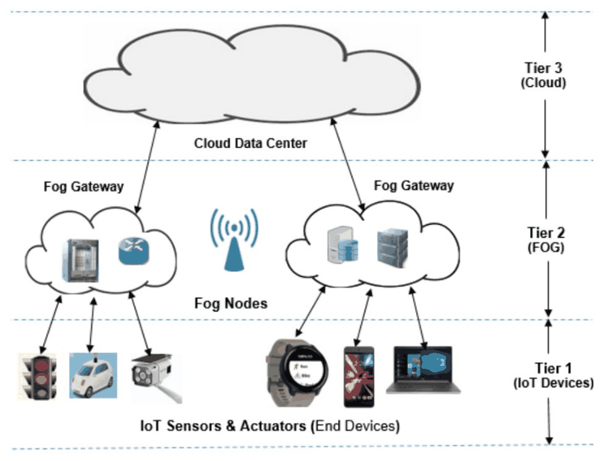
Anatomy of an embedded system
The main components of an embedded system
What is on the circuit board?
Open up almost any smart gadget and you find the same cast: a brain (the main chip), senses (sensors), muscles (actuators), a face for the user (LEDs, buttons, a screen), and a stomach (the power supply).
The remaining topics look at each of them in turn.
- System-on-Chip (SoC): CPU, RAM, flash, I/O interfaces and radio in a single chip.
- Sensors, actuators and the user interface (LEDs, buttons, buzzers, screens) are attached to the SoC through
GPIO,ADC,UART,SPIandI2C. - Power source: a battery or an energy harvester.
- The photo shows all of this on a real wearable board a few centimetres long: the SoC, two accelerometers and a gyroscope (sensors), an LED (output), flash memory (storage), a printed antenna, a voltage regulator, a wireless charger with its charging coil (power), and serial and programming interfaces (connectors).
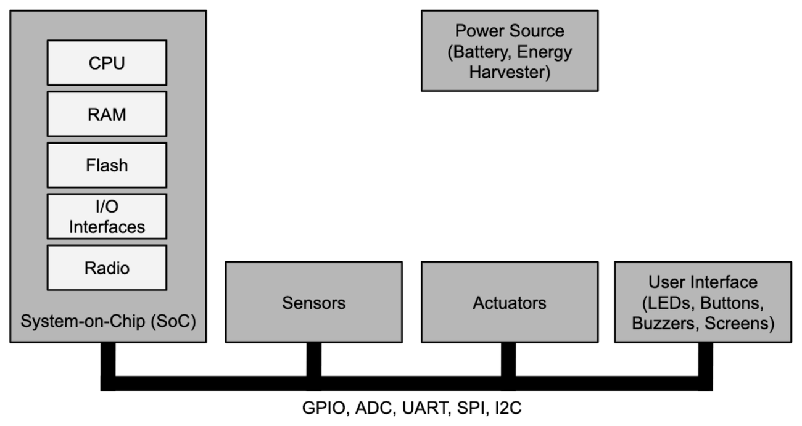
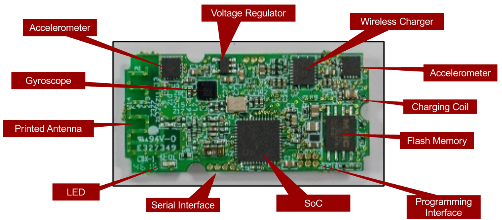
Microcontrollers (MCU) and Systems-on-Chip (SoC)
A whole computer in one chip
A desktop PC has a processor, memory and connectors spread over a big board. A microcontroller squeezes all of that into a single chip the size of a fingernail.
A System-on-Chip goes one step further and adds the extras too: storage, a radio, sometimes even sensors. One chip, (almost) the whole product.
- MCU: a small computer in a chip: processor (CPU), RAM, and input/output peripherals.
- SoC: an MCU (processor, RAM, I/O) plus non-volatile storage (flash memory), network interfaces (a wireless radio), other processing units (GPU, DSP, accelerators) and integrated sensors.
- Example SoC: the CC2650 by Texas Instruments. It contains:
- an ARM-based CPU (a Cortex-M3 in the figure);
- memory: RAM, cache, ROM and flash;
- a wireless module with its own dedicated CPU and RAM (the RF core with a Cortex-M0);
- a sensor controller, including a 12-bit ADC;
- various controllers for interfaces (I2C, UART, SPI, GPIOs) and various timers;
- a crypto module, an integrated temperature sensor and battery monitor, and Direct Memory Access (DMA).
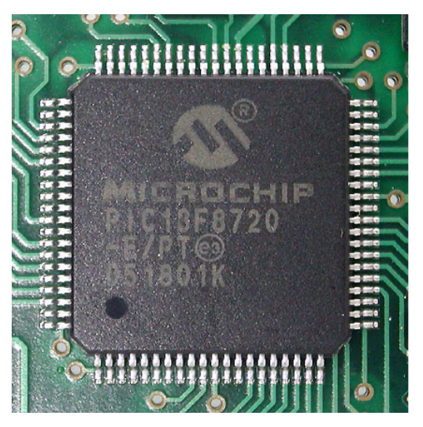
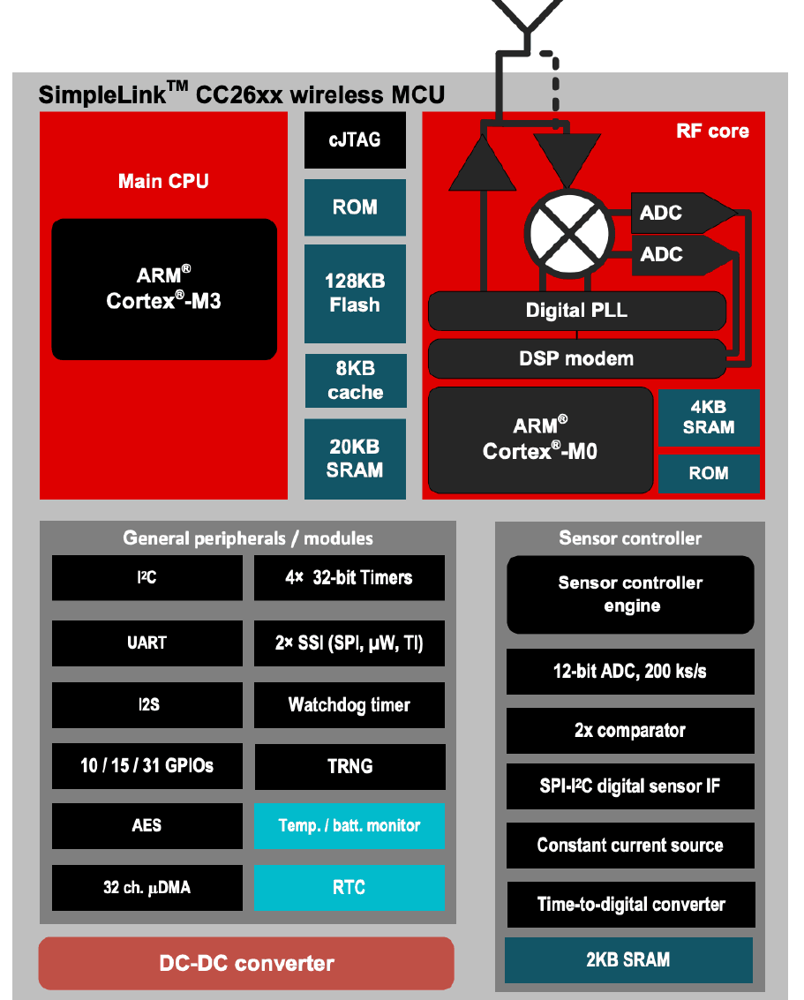
Processors
Architectures and the ARM Cortex families
Engines come in sizes: a scooter, a family car, a truck. Processors do too. A tiny sensor that sleeps most of the day needs a scooter engine, not a truck engine.
Most of the "engines" in embedded devices are designed by one company, ARM, which does not build chips itself but sells the blueprints to chip makers.
- Processors come in 8-bit, 16-bit, 32-bit and 64-bit architectures.
- Popular architectures and vendors: AVR (Atmel), PIC (Microchip), MSP (Texas Instruments), STM (ST Microelectronics).
- ARM licenses CPUs to chip vendors. Its Cortex processors come in three series:
- Cortex-A: generic applications. Application processors with an MMU that support Linux or a mobile operating system.
- Cortex-R: real-time.
- Cortex-M: embedded, low-power: microcontrollers and deeply embedded devices.
- In the figure, capability and performance grow upwards: the M series sits at the bottom, R in the middle, A at the top.
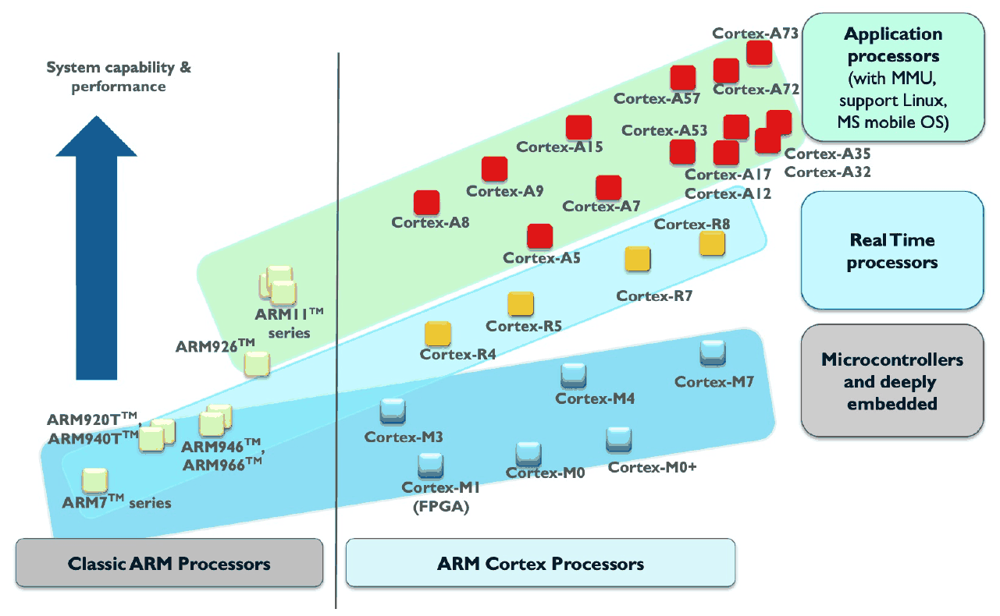
Transducers: sensors and actuators
Translators between electricity and the world
A chip only speaks electricity. The world speaks sound, light, heat and motion. A transducer is the translator between the two.
A microphone translates sound into electricity (a sensor); a loudspeaker translates electricity back into sound (an actuator). Same idea, opposite direction.
- Sensors and actuators are transducers: they convert a signal from one form of energy to another.
- Input transducers convert a physical quantity into an electrical signal: sensors (accelerometer, thermometer, microphone, camera).
- Output transducers convert an electrical signal into a physical quantity: actuators and other output devices (motors, heaters, speakers, LEDs).
- Types of transducers, named after the other form of energy involved: electromechanical, electromagnetic, electrochemical, electroacoustic, electro-optical, thermoelectric.
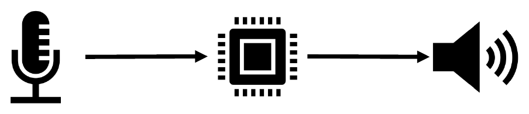
Sensors: analogue and digital
From a wiggling voltage to ready-made numbers
A basic (analogue) sensor just produces a voltage that goes up and down with whatever it measures. The main chip still has to turn that voltage into a number.
A digital sensor is the convenient version: the measuring part, the converter and a tiny controller are packed in one chip, and it hands you finished numbers.
- Analogue sensors produce an electrical signal that correlates with a physical phenomenon. To be processed by a digital system, an Analogue-to-Digital Converter (ADC) is needed.
- Digital sensors are analogue sensors packed in a chip with an ADC and a controller.
- The figure shows the inside of the ADXL362 accelerometer: a 3-axis MEMS sensor, amplifier, demodulators and antialiasing filters, a 12-bit ADC, and digital logic with a FIFO and an SPI interface (pins MOSI, MISO, CS, SCLK) plus interrupt pins.
- Types of sensors:
- Electromechanical: accelerometer, gyroscope, flow meters, air pressure.
- Electromagnetic: magnetometer, contact sensors, radar.
- Electrochemical: pH, gas sensors, chemical detection.
- Electroacoustic: microphone, ultrasound, piezoelectric sensors.
- Electro-optical: camera, infrared camera, light sensor, PIR, lidar, heart rate (PPG).
- Thermoelectric: temperature sensor, body temperature.
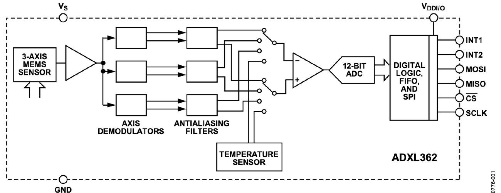
Actuators, output devices and other I/O components
Making things happen
Output is the way back: from numbers to something you can see, hear or feel. For simple things a switch is enough (LED on, LED off). For complicated outputs like a screen, the main chip does not steer every pixel itself: it sends short commands to a helper chip that does the fiddly work.
- Actuators and output devices control or manipulate a physical quantity with an electric signal.
- To be controlled by a digital system they need a switch, a Digital-to-Analogue Converter (DAC), a signal generator or a modulator.
- Controller chips implement a command interface to control the physical output. The figure shows the SSD1306, which drives a 128 x 64 display panel.
- Types of actuators and output devices: electromechanical (motors, valves, vibration motor), electroacoustic (loudspeaker), electro-optical (screen, LEDs), thermoelectric (heater).
- Other input/output components:
- External storage: flash memory chips, SD cards.
- Connectors and interfaces: jacks, pin headers, sockets; antenna connectors and printed antennas; jumpers and solder bridges.
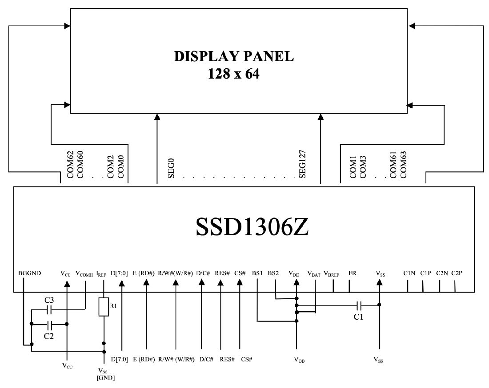
Power management
Regulators, converters, charging and harvesting
Chips are picky eaters: they want a steady voltage, and different chips want different ones. A battery is anything but steady: it sags as it empties. Power management is the kitchen in between, turning whatever the source delivers into exactly what each component needs.
It also takes care of refilling: charging the battery or collecting energy from the surroundings.
- Embedded systems are typically powered by DC sources: batteries, or the mains through rectification. The power source is typically noisy and imperfect.
- Voltage regulators automatically maintain a constant output voltage.
- Linear voltage regulator: linear voltage adjustment; dissipates power (the excess becomes heat).
- Switching regulator: rapid on/off switching; more efficient.
- Voltage converters (DC-to-DC) convert a source from one voltage to another, because components may need to be powered at different voltage levels.
- Step-down (buck) converter: output voltage lower than the input voltage.
- Step-up (boost) converter: output voltage higher than the input voltage.
- Battery charging: a battery charger (for example via USB), or an inductive wireless power receiver (for example Qi).
- Energy harvesting: a solar power manager, an RF power manager, and so on.
- Why linear regulators waste power: the same current flows in and out, so the share that reaches the load is at best
efficiency (linear) ≈ Vout / Vin 9 V down to 3.3 V: only about 37%
Summary
The lecture on one card
Embedded system
A computer in a device whose principal mission is not computation. Special-purpose; measures and controls physical operations. More than 98% of processors (2009 estimate).
Four function groups
Input/Output, control (sensing and actuation), safety (errors and warnings), time keeping.
Sensors and actuators
Sensors measure the physical world; actuators alter it. Both are transducers: input transducers and output transducers.
Networked embedded systems
A group of embedded systems connected over a network, cooperating towards one goal. Also called distributed embedded systems.
Connectivity trend
Isolated, networks within one machine (CAN bus: 1983, 1986, 1991, 1993), wired networks, wireless (star to multi-hop, mobility), Internet of Things.
Machine intelligence
Control systems: sensing, actuation, control algorithm. Rule-based: deduction, if-then. Data-driven: induction, machine learning, deep neural networks.
Cloud: pros and cons
Pros: computing power, storage, accurate large models. Cons: cost, latency, dependency on infrastructure, privacy.
Cloud-fog-edge continuum
Embedded AI on the devices, fog servers for more compute or data fusion, cloud data centres for the really demanding tasks.
MCU vs SoC
MCU: CPU, RAM, I/O peripherals. SoC: MCU plus flash, radio, other processing units, integrated sensors (example: CC2650).
ARM Cortex series
A: generic applications. R: real-time. M: embedded, low-power. ARM licenses its CPUs to chip vendors.
Signal conversion
Analogue sensor needs an ADC. Digital sensor: sensor, ADC and controller in one chip. Actuators need a switch, DAC, signal generator or modulator.
Power management
Linear regulator (dissipates) vs switching regulator (efficient). Buck steps down, boost steps up. Battery charging and energy harvesting.
Figures cropped from the lecture slides "Introduction to Networked Embedded Systems" by Xenofon Fafoutis, DTU Compute, with their original sources noted. For personal study.